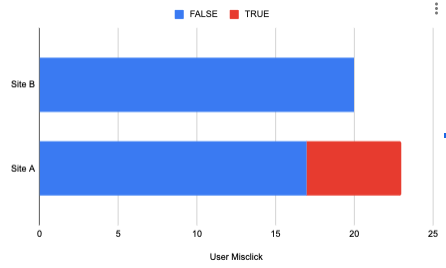
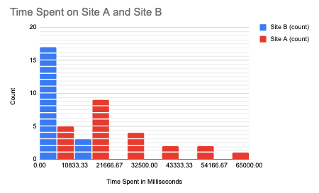
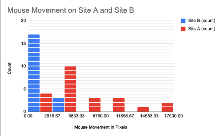

Making Reactive Sites
I have made a few different design webpages, yet I think its time I take it up a notch. I need to work on dynamic websites.
I want this project to ultimately culminate in a sortable, filterable webpage with some sort of interactable aggregate.This journal entry will start with a idea generation, then move to a competitve analysis, and proceed to a development summary.
Getting Started
There are plenty of different websites I could make that fullfil the requirments. When quickly listing some rough ideas I was able to come up with:
- Movies
- Groceries
- Hotels
- Bakery
- Honey
- Podcasts
- Diverse-owned goods
Now, I know one of those is very different then the rest, but I think that is where it really shines. I should say that I am a beekeeper. This means that I know a bit about the industry and the major honey producers. The industry is full of a few massive companies and then many mom and pop shops.
I thought it could be interesting to design a system to help people support the smaller producers. They both have better a better product and usually struggle to find customers—and end up giving away a lot of honey as gifts.
But, local honey is great. It can help people with their seasonal allergies, and often is made up of many more pollen sources than the big producers. These hints of flavor make the taste of the honey more complex and make it pair well with certain food groups.
So, I wanted to theme my aggregator and list to be based on a market place for small producer's honey.
The Compititon
In order to best understand how my website can shine, I need to look at the current methods that exist. I want to start with a competitive analysis of the major multi-vendor sellers and create a feature comparison chart. For the sake of this project, I am just going to highlight three sellers but in a real scenario I would expand this to many more.
Before starting, I want to highlight the five factors that I will be judging these websites on.
- Intuitive
- Regional Breakdown
- Highlights Small Producers
- Educates Users
- Helpful Reviews/Comments
The three websites I chose to complete our competitve comparison chart with are 1. Amazon, 2. Honey, and 3. Local Honey Finder.


Comparison Chart
| Feature | Amazon | Honey.com | Local Honey Finder |
|---|---|---|---|
| Reviews | ✅ | ❌ | ❌ |
| Intuitive Design | ✅ | ❌ | ❌ |
| Regional Breakdown | ❌ | ✅ | ✅ |
| Highlights Small Producers | ❌ | ✅ | ✅ |
| Educates Users | ❌ | ✅ | ❌ |
Comparison Chart Analysis:
I think this competitive analysis really outlined that there is a way to greatly expand upon the current options. No method is perfect. They either are convoluted / too geographically oriented. On the other hand, they are standard shopping methods not modified to take in consideration of honey’s nuances.
Amazon's most effective factors are its intuitive design and filtering system. However, it doesn't allow you to easily break down results by geographic origin. There is a clear heirarchy and design cohesion.
Honey's most effective factors are its massive map. Yet, there are now ways of easily buying the products on the website. It only redirects you. There is a map like interface which doesn't seem entirely cohesive to the shopping experience.
Local Honey Finder has similar problems. Additionally, it doesn't effectively educate the users on the nuances of honey's many details. It doesn't tell the user the specific pollon breakdown or flavor notes that honey.com can educate the user. It's work flow is unclear and will likely lead to the user having frantic mouse movement.
Starting to Redesign
Using this information, let's design the key features needed for this website:
1. A way of educating the user about each type of honey.
2. The ability to filter the honeys by pairings.
3. The ability to regionally organize the honeys.
4. The ability to sort by both price and ounce.
5. Understandable UI/UX that matches standard shopping behavior.
I believe these features will successfuly differentiate from the current alternatives.
The Design
Components
I broke down this design section into each of the elements that I want to use. First, there is each individual product item. Second is the cart, and third is the filters.
This means that our Null Hypothesis (H0) is that there is no significant difference between the misclick rate for Site A and Site B.
Our Alternative Hypothesis (HA) is that the edits made to Site B's buttons and styling caused a scientifically significant difference in the misclick rate for Site A and Site B.
My prediction is that we will prove our HA because many stylistic and visual edits were made.
I need to use a chi-square test to analyze the statistical difference between site A and B because misclick data is a binary flag.
Misclick - Chi-square - Data Summary
The Degrees of Freedom for this test are one. This is based on the number of rows and columns of the data table. With a one and a significant threshold of p < 0.05, we can look at the chi-square distribution table to get a significance level of 3.841. All this means is that if our Chi^2 value is greater than 3.841, then we can reject our null hypothesis. The Chi^2 value was calculated to be 6.0634. Thus, we can reject the null hypothesis. The edits made to site B caused a significant change in user misclick data.
Analysis Of Time Data:
This is a continuous data point. Results are in milliseconds. This represents how long the user was on the website before completing the objective.
For this statistical analysis, we want to prove that users spent less time on site B than on site A. This would mean the new design was more efficient and clear. This was not possible for a binary data point; however, we can do it for continuous data types through a two-sample, one-tail t-test. Essentially, we are comparing two different sets of continuous variables and want to see if one group is significantly less than the other.
This means that our Null Hypothesis (H0) is that there is no significant difference between the time spent on Site A and Site B.
Our Alternative Hypothesis (HA) is that our edits made it so that users on site B needed significantly less time to complete the objective than users on Site A.
My prediction is that we will prove our HA because many stylistic and visual edits were made, improving the text legibility of site B.
Time Spent - Two Sample, One Sided T-test - Data Summary
The average time on page A is 8193.8 ms. The variance for page A is 6594762.168. The average time on page B is 22324.783 ms. The variance for page B is 234839182.451. We use these statistics to complete a T-test which gives us a Degrees of Freedom of 23.4156. The more degrees of freedom that a t-test has, the more the data-set distribution approaches normal. We also got a t-score of 4.353. This indicates a significant spread between the two groups. A positive number specifically means that Site B's time is less than site A's. Finally, we also got a p-value of 1-0.00011293. This is less than 1-0.05, so we can reject the null hypothesis. The edits made to site B led users to spend significantly less time on the page than site A.
Analysis Of Mouse Movement Data:
This is a continuous data point. Results are in pixels. This represents how much the user moved their mouse before completing the objective.
For this statistical analysis, we want to prove that users moved their mouse less on site B than on site A. We can use a two-sample, one-sided t-test for this.
Null Hypothesis (H0) is that there is no significant difference in mouse movement between Site A and Site B.
Alternative Hypothesis (HA) is that our edits made it so that users on site B moved their mouse significantly less than users on Site A.
My prediction is that we will prove our HA because many stylistic and visual edits were made, making the users have to search less for their objective.
Mouse Movement - Two Sample, One Sided T-test - Data Summary
The average movement on page A is 6471.423px. The variance for page A is 19773316.8. The average movement on page B is 2435.399 px. The variance for page B is 452799.514. We use these statistics to complete a T-test which gives us a Degrees of Freedom of 23.155. We also got a t-score of 4.297. This indicates a significant spread between the two groups. A positive number specifically means that Site B's movement is less than site A's. Finally, we also got a p-value of 1-0.0001327. This is less than 1-0.05, so we can reject the null hypothesis. The edits made to site B led users to move their mouse significantly less than users of site A.
Results:
In all, we rejected all of the null hypotheses. This shows that Site B is probably a better site than Site A when it comes to completing the assigned objective. That last bit is very important. We do not know any information about how sites A and B performed for other tasks. Some of the edits we made could have improved one task but greately worsened others. This is important to consider as we continue to work. In a real world scenario, this would only be the start! From here, many more alternatives could be tested. I believe that website B is the greater site because of the readability improvements. These further tests could show what exactly is the most readable or intuitive method of showing doctor appointments. Additionally, in further testing it is very likely that sometimes not all variables pass the null hypothesis. In these scenarios, it is up to the designer and team to figure out what the suitable next step is.
I really enjoyed this project because it gave me the ability to actually go ahead and complete something that I had only heard about. I was able to ground the theoretical into the practical! Now, I am just excited to get started on my next test!